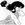

|

Kirinin
Author of 14 Stories |
Chapter Seven: The End of the Beginning
"Well?" Ryoga inquired.
Damn it, girl, say something. Say anything. Don't just sit there. Tell him 'no'. Say, 'cursed?' and blink cutely. He stares at you, he's staring at you right now. He'll hear you and accept anything you have to say. Let him believe what he wants to believe.
She shivered a little, wrapping her arms around her frame, gazing at the roughness of the rooftop, the gritty pattern of it. Part of her wondered idly where this savvy, hard voice in her mind had come from, a voice that sounded a lot like Nabiki at her most malicious.The voice was chattering on, as if it wanted to distract her deepest self: listen Ranma, listen, you can have Akane, you can have this dojo – heck! You already do, it's practically in the bag – you don't have to wander around like your old man did; you can live here in peace and quiet. Don't peace and quiet sound good? And isn't that what you really deserve after the kind of life you've led?
"My old man..." Ranma whispered. "I've become like his protégée or something.""Huh?"
Ranma shrugged. "Yeah, I'm cursed." She tried hard to sound cool, uncaring, a little bit offhand, like her curse was really no big deal.
"So you are cursed. I see." Ryoga chuckled to himself, shaking his head.
"Well? What's so funny about that, huh?"
"It's not funny. I'm... relieved. I'm actually something bordering on elated," he confessed, grinning enough to show a bit of fang. "I kind of feel like this puts us back on common ground."
Ranma scratched the back of her head, giggling nervously. "I doubt it," she murmured. Then suddenly, her eyes lit with surprise. " 'Common ground'?" she quoted. "Wait a minute! You're cursed, too?"
Ryoga took a deep, steadying breath. "Yes... and I'm afraid my curse is... truly shameful."
"Ditto. Mine's gotta be worse than yours, come to think of it."
"Not possible," he countered dryly.
"I'd make you a bet if I felt like spilling my guts about the whole business," Ranma groused. "Though, come to think of it, it's not the curse itself that's dishonorable." She brought her right hand up to her forehead and rubbed distractedly, pulling her hand down her face.
Ryoga frowned at her. "What are you saying?"
She peered at him through the gaps between her fingers. "The truth is, I don't mind the curse itself. It's a bother and all, and it's... well, it's confusing. But mostly, it's the opportunity to put on a different face that's got me. The very real possibility of being someone new one minute to the next... and abandoning the person I was... his responsibilities and his honor. It's a mask I can wear when I feel I don't want to face real life. And I can use it to avoid making up for my mistakes. This curse makes it too easy to become dishonorable."
Hibiki Ryoga examined her carefully, his brows furrowing in concentration. "I'm not sure I understand."
Ranma shrugged. "Look. If you had the opportunity to put on another face, to go incognito, to abandon all of your obligations and responsibilities, wouldn't you? Especially if those responsibilities seemed like they were becoming more than you could handle?"
The other martial artist shrugged, his eyes moving as he thought. "Well," he said, his hazel eyes meeting hers, "it's not like you can ever really abandon yourself. All that does it put off your responsibilities. Who you are will be waiting when you get back."
He was taking her seriously! Ranma thought back to when Akane had first believed her about being a boy, without any proof, even. Ryoga was doing the same sort of thing, answering her honestly without examining her motives. When Akane had opened her heart to her, she'd felt warm and protected, and a little surprised. Did people like Akane really exist? Could it be true that there were people who had the ability to accept others that way, without wondering about the emotional cost?
Now that Ryoga was doing the same, it gave her a different feeling. She felt incredibly guilty. He was trying to help her, and she was tricking him.
"Ranma?" He was concerned over her.
"Uh... okay, that's true. But what if you could just keep on pretending? What if you could keep going that way, and dodge the responsibility forever?"
"That's impossible," Ryoga told her, a measure of irritation entering his voice. "Look, nobody can just keep avoiding responsibility. Their old life would catch up to them. Or, if someone were to create a new life, with new friends, a new home, even looking like someone else – that new life comes with new responsibilities, right? Then you've got two sets of obligations to deal with." He paused his halting answer for a moment, then looked up with new purpose in his eyes. "Ranma... what are we talking about, here?"
"Two... sets of obligations..." Damn it, he was right. It seemed that she'd underestimated him, thinking he was just a set of muscles with a temper behind them instead of a brain. He could be... insightful when he wanted to be.
He must've noticed her speculative stare, because he shrugged and said, "Feh. I guess wandering the globe on your own gives you plenty of time for thought."
"No kidding." She offered him a small smile. "Listen, if we don't go soon, I'll be late for work." She rose off the rooftop's gritty surface and stretched her arms above her head.
"Ranma," he said in a way that made the redhead stop mid-stretch and turn to look at him.
"What is it?"
"Uh... you're going to be sticking by me for awhile in case..."
"That's right," she replied, wondering what he was getting at.
"Even after all the things I've said to you..."
She rolled her eyes. "Look, if every insult hurt me I'd be dead ten times by now just from Pops alone. I got a thick skin, Ryoga; you don't need to worry about me none. I'm not saying it wouldn't be cool if you were a little bit nicer... a little bit more like you are right now," she finished, trailing off, wondering if she'd said or revealed too much. That sure was becoming a familiar feeling.
"I can't help it!" he snapped.
"Can't help what? Insulting me?"
"Yes! No... I mean, well, sort of."
Ranma settled back down again, resigning herself to lateness. "That's a little ambiguous, Ryoga-kun. Try again."
"Will you stop badgering me? You're not making this any easier!"
When Ranma said nothing in return, he seemed to gain hold of himself. He spoke in careful, measured tones. "What I mean is, I can't seem to stop myself. I feel myself getting angry – I know there isn't a reason. My brain knows it. But somehow I find myself saying these things, doing these things..." He shook his head. "I think maybe that girl was right. I think that the wound did something to me. The... Clatha, whatever it's called. But if she was right about that, then that means... that means that she might have been right about the rest..."
"Doc Tofu'll find a cure," Ranma said with a certainty she didn't quite feel. "You don't have to worry about that. Doc Tofu's the best, he really is. All you gotta worry about is keeping it together until then. We can do that."
"We?"
"Yeah, 'we'! Did you think me n' Akane were gonna leave you to your own devices?"
He laughed then, sounding a little desperate; but the laugh was genuine.
Ranma grinned back at him. "It's gonna be my quest to cure you, Ryoga. You'll see. I never lose." She clapped him on the back.
It was then that a strange thing happened.
As Ranma withdrew, his outstretched fingers touched hers. A strange jolt accompanied the touch, like a small, electric shock. Finally, a small burst of light the size of a winking firefly manifested, directly at the point of contact. It was a pale, sickly green color.
"What the-?"
Ryoga stared at her, his dark eyes wild. "Shit," he breathed.
"So somehow we've synched up or whatever you call it," Ranma said, close on the doctor's heels as he wandered off to find a brace for a twisted ankle.
The doctor wiped his hand across his forehead as if to clear it of memories from the previous evening. "I'm still not quite sure what you even did, Ranma," he informed the redhead, speaking over his shoulder as he rummaged through their notoriously badly organized series of medicine cabinets and cubbyholes. "Sucking the chi from another human being? And possessing such a talent naturally?"
"I've always been good at the martial arts, doc," Ranma informed him. "I don't see the big deal."
"This isn't martial arts, Ranma; this is chi manipulation, a big step from even the feats I've seen you perform. This isn't some kind of game or new special attack."
"Then what is it?" Ranma queried, taking pity on the doctor and procuring a brace in a matter of seconds.
"Thank you," he said, taking it and moving back into the patient's room. "A medical miracle," he replied.
"A what?" inquired the small, slender lady lying within. "The brace? It is special in some way?"
Tofu-sensei smiled reassuringly. "Ranma's chi manipulation is a medical miracle, Ishi-san."
"I don't see how," the redhead sighed. "This is just useful for Ryoga, doc. How many other people need the depression sucked out of them on a daily basis?"
"Quite a few, I'd say," Ishi-san replied. "Ite! Not so rough."
"Sorry, I'm being impassioned," Tofu informed her. "It's difficult to be gentle and impassioned at the same time."
"Granted, but – ow!"
"Besides that," the doctor said, tightening the brace and strapping it closed, "depression isn't the only disease which might be aided by your talents, Ranma. Do you understand what this could mean, not just for you, but for science?"
"What I understand is that I've become saddled with Ryoga Hibiki for possibly the rest of my life!" She grimaced. "Not to mention that he's saddled with me. We'll grate on each other, sensei, mark my words."
"Ha! Or perhaps you'll simply become very, very close," the doctor offered innocently.
Ranma shuddered.
"Speaking of Ryoga, would you mind checking on him? I haven't seen him for five minutes; best to make certain he hasn't wandered off, burned a hole in the universe, that sort of thing."
Ranma rolled her eyes and meandered off.
From inside the examination room, she could still hear Ishi-san's voice: "Doctor? Burned a hole in the... What do you mean you aren't joking?"
She smirked, and began to wandering around to look for the two guys who just couldn't seem to leave her alone.
Oddly enough, she found them together, seated within the doc's office at his desk. Joi was sitting in Ryoga's lap, while the fanged boy pored over one of Tofu-sensei's more obscure medical texts.
"Having fun?"
She startled both boy and dog; the nearly identical expressions on their faces made the redhead double over with laughter.
"What's so funny, huh?" Ryoga demanded, one hand poised to turn a page, the other resting on Joi's head.
"Nothing. Hey, I thought you said he hated you," she accused, moving to stand near the pair. She leaned over and scratched behind Joi's ears.
"He used to. Seems to like me, now, kinda."
"What you up to, then?" she inquired, peering over his shoulder. "Curses of the Beast. Found anything good?"
"Nah. I just thought, ya know, better to sit and read this crap than sit and do nothing. Right?"
"Absolutely," the redhead asserted. "Anybody ever tell you that you're a little.. uh... mercurial?"
"What the heck's that?"
"Changeable, mutable." She smirked. "Moody."
"Nah, you're the first."
"First you're screamin' your head off at me, then we're having a heart to heart, and now you've become a scholarly expert on..."
"Curses," he supplied.
"Curses," she finished. "You're awfully weird, ya know that?"
"Says the cross-dressing tomboy who steals chi by touchin' people," he slurred, rubbing his forehead. "Ow. Maybe too much reading."
"I have to concede the point," she replied, rolling her eyes. "Two weirder people would be hard to find. So... anything in there about the Jhusenkyo kind of curse?"
Ranma winced. Why had she brought that up again? Did she have some kind of death wish?
"Uhm... yeah, right here. Nothing real good, though."
"What does that mean?"
"Eh, just some stuff about how it's pretty much impossible to cure – unless you want to stay in your cursed form, that is."
"Oh?" Ranma felt like someone else had made the polite inquiry. A cold shiver was running through her entire soul, her sense of self. She didn't have to be a guy at all, then?
The curse could become the reality?
She remembered Ryoga's words: the second life could easily become as complicated as the first, even if the problems of her old life never caught up with her, which was unlikely. But didn't she owe it to herself to keep all her options open?
I mean, being a girl wasn't really all that different from being a guy – except... well, a lot of the stuff that got me liked as a guy, like being strong and outspoken, sometimes got me in trouble as a girl. There's all this girl-body stuff to deal with... but there's some guy-body stuff I'd sure look forward to losing.
She sighed, a wistful smile crossing her features. And then there's her.
Akane...
Ryoga was looking up at her curiously, as though he'd somehow divined her thoughts. "That doesn't interest you, does it?"
Ranma laughed nervously. "No way! Just wondering what it would be like to be uncursed again."
Nice save, she thought, and true.
Ryoga's expression slowly shifted from one of suspicion, to one of temporary reprieve. Ranma knew he would bring this up again, later. "There's all sorts of stuff in here. Some stuff about possession, and I saw something about people who're lost..."
"Really?"
"Mmm, this book at least mentions anything and everything. It's bound to have that Clatha thing in there someplace."
Joi hopped down from Ryoga's lap and barked.
"Like a little timer, aren't you?" Ranma teased the small dog. She looked up to Ryoga. "Time to feed the bottomless pit; and then I've got to go and train. Wanna come?"
Ryoga frowned, looking slightly puzzled. "Uh... sure, I guess." He looked back at the book, and removed a single bandanna to mark his place.
"No..." Akane said for the third time. Ryoga marveled at the fact that her voice was still gentle, though. She did not seem disturbed by Hikaru's seeming lack of comprehension; rather, the youngest Tendo daughter seemed to be under the impression that if she explained it enough times, and in enough different ways, her student would eventually grasp the move she was attempting to demonstrate.
Ryoga himself wanted to shoot the weak-looking boy. It would be natural selection, anyway. Hikaru Gosunkugi was thin, stringy, and always looked like he hadn't quite gotten enough sleep. Ranma's student, Tatewaki Kuno, was far more fit. In fact, the young kendoist had the makings of a great martial artist, though Ryoga privately thought that the swordsman did not possess half the potential of Ranma or himself, or even perhaps Akane. Despite her patience while working with others, Akane was a fury in private brawl, with a style so similar to his own that he longed to try his hardest moves on her. In fact, he would have been working with the others if Ranma hadn't convinced him not to.
She'd made it sound so reasonable at the time, twisting his own words around until it sounded like he already had agreed not to fight the others, then using his own arguments to convince him to stand down. Her circular logic was a work of art; he could scarcely believe she was the same Ranma who'd had trouble piecing a coherent sentence together back in junior high; but she had been pretending to be someone else, then, Saotome Ranma, man among men.
Akane's burst of laughter, followed by applause, snapped Ryoga away from his musings. He watched her small, slender student execute a perfect jump snap-kick.
Kuno flourished a bow in acknowledgement of the less-experienced Hikaru, making the younger boy blush in embarrassment and stumble over his own feet. Ranma laughed, sharing some secret comment with Akane that made the Tendo girl blush, too. Despite all the fun, and despite the general feeling of tolerance the others demonstrated towards him, Ryoga felt very much on the outside. The four before him seemed bound by more than the martial arts that was being taught. They seemed... he didn't know. Connected in a way he couldn't place.
Joi licked his hand in sympathy.
"Oh. Hi."
The small, brown-and-white dog's plumed tail waved enthusiastically in the air.
Ranma and Akane set their students up to spar. They watched the pair, shouting out encouragement and criticism in the same breath. "Duck, Hikaru, duck!" "Good – no – move, you're not moving..."
Ryoga watched them too, but he was feeling warm and lethargic. Joi crawled half into his lap, resting his cold nose against Ryoga's knee. He watched as Kuno struck hit after hit against the younger boy, although the kendoist was obviously holding back.
"Come on, Ranma, let's have one decent battle," he said.
Ranma stared over at him. "But..."
"Unless you're afraid you'll lose."
"I ain't afraid of losing to anybody," Ranma said with an odd mixture of masculine pride and feminine affectation. With her chin high in the air and one eyebrow arched like that, she truly appeared a woman scorned.
"Ranma..." Akane warned lightly under her breath.
The redhead's proud stance deflated under her friend's glare, but she shrugged. "Maybe it'll help rather than hinder, Akane. We have to test it to be sure." Her eyes were dancing merrily into Ryoga's though. She loved the martial arts with the same passion he did.
Kuno strode up to the redhead. "Are you certain of this, my lady?"
She nodded. "Thank you, sir," she replied with the utmost gravity, "but I do think this is for the best."
He nodded, and withdrew.
The redhead and the Lost Boy faced off outside the dojo. "Any rules, or no-holds-barred?" she inquired.
"No-holds-barred," Ryoga replied.
Akane broke in as she emerged from the dojo. "I have requirements. No special attacks, no ki manipulation. Simple jumps, kicks, and the occasional speed or strength technique."
"Aw, Akane," Ranma moaned. "It's not like we can help the ki-transfer thing."
"The what?" Akane queried.
"You'll see," the redhead predicted.
"You realize you're taking all the fun out of this," Ryoga accused the dark-haired girl.
"No," Akane replied, "I'm protecting my home."
The pair looked around.
"Uh... perhaps my Iron Cloth technique might do some harm around here," Ryoga admitted, spying the supports to the dojo out of the corner of his eye.
Ranma nodded. "Agreed. Shall we?"
"I'll call it," Akane said. "Kuno, Hikaru. Watch closely but stay back."
Neither liked this admonishment, but both withdrew to stand in the doorway of the Tendo Dojo.
Akane grinned a little manically. "Ready? Fight!"
Ryoga moved to circle Ranma. "I've picked up a couple of tricks since we last had a real fight, Saotome."
The redhead grinned. "Excellent," she drawled. "You'll find I won't have been slacking, either."
Ryoga watched her motions, despite the fact that it was a little embarrassing to be scanning a girl's body this boldly. He had to show her he was better, even if it was just for his own peace of mind. Suddenly, he caught the slightest shift in her stance, and rapidly dodged away.
Ranma flew through the air, foot extended, and tagged the edge of his arm despite his fair warning. Ryoga frowned. Somehow he'd been thinking of her as less skilled now that she was a girl full time. It was a foolish mistake. He rubbed his upper arm ruefully before shifting back into fighting stance.
The redhead grinned at him and winked.
He wondered why he hadn't seen this side of her before. Or had he been ignoring it? He suddenly got the impression that Ranma had goaded him into battle in order to get a decent workout, rather than because of any malicious intent. Just now, her eyes were sparkling with the joy of a girl doing what she loved.
Stop examining her eyes and start looking for her moves. Idiot. Mentally slapping himself to attention, he allowed her to get several more attacks in as he thought. She's fast – faster than I am by far. She's an aerial fighter, so her reach is long. If I can get in close, I might have a chance.
He closed in and grabbed her fists. Immediately, there was a response; green and silver flashed at their touching fingers before Ryoga could throw her backwards to land on her behind.
She began to look irritated, and more than a little confused. "Exactly how strong are you?"
He grinned. "I could press a Buick."
"Hn." She gave him more room, a mark of respect; but now they were done gauging one another. Ranma leapt for Ryoga, delivering ten rapid roundhouse kicks in the space of three or four seconds. Ryoga blocked the last two and grabbed her leg to twist her around. Ranma caught her fall by landing on her palms and springing directly back at the surprised martial artist. Ryoga took the hit directly in the gut, and stumbled back several steps, gaining some space. Ranma used this opportunity to punch him roughly in the solar plexus, hard enough so that the Lost Boy had the wind knocked out of him.
All of this occurred in the first eight seconds of battle.
Kuno, Hikaru, and Akane watched carefully.
"How is she going that fast? How?" Hikaru managed.
"I think it was seeing that Amazon girl do it," Akane replied, slightly calmer. She, after all, had witnessed her fiancée's prowess before. "Although Ranma hasn't matched that speed, she now knows it's possible to do so." Her serene expression was replaced with a frown. "But now I see what Ranma was talking about when she mentioned ki-transfer."
Kuno remained silent in his contemplation. His eyes followed Ranma's progress rather than Ryoga's, as if she was drawing a map he intended to follow.
Ryoga grimaced, and rejoined the battle with determination, going on the offensive. He swung and missed with a roundhouse punch as the redhead leapt lightly in the air, then barely tagged him with one foot on his forehead as he overextended. He snagged her legs before she landed, then swung her so she caught the brunt of the force with the back of her neck.
"Owie!" She caught him between her legs, swung him over her head, and slammed him into the ground on the back of his neck.
"Ite!"
"That's what you get!" She lifted him up with her legs and smashed him into the ground a few more times for good measure. "Yield?"
"Not in a million years!" He twisted free of her grasp and moved to stomp her as she lay on the ground.
She rolled away from his smashing foot, then couldn't help but laugh as his leg became lodged in the dirt. "Too strong for your own good!" she noted.
He struggled to free himself, swinging with both arms. Ranma ducked and wove around his flailing limbs, sticking her tongue out and blowing the occasional raspberry the entire time. Finally, she managed a hit on his ribs, knocking him backwards far enough that, with his foot still stuck in the ground, he was performing the gymnastics maneuver, 'the Bridge'.[1]
Ranma raised her own foot almost delicately and placed it atop Ryoga's knee. "Both your kneecaps are broken and your lung is punctured. Yield."
"Yield," he said wearily.
"It is? When-?" Akane rushed to Ryoga to help him up.
"They aren't really," Ryoga said, a strange wariness and incredulity in his voice. "They just would have broken if she'd followed through."
Ranma shrugged, not looking all that embarrassed. "It's how she taught me to spar," she said with a nod to the dark-haired Tendo girl.
Akane nodded in turn, then plucked Ryoga from the ground. Still holding onto the Lost Boy's forearm, she examined the hole he'd left behind. "Looks like a good spot to plant a tree," she half-joked.
"Or an idiot," Ranma murmured, too softly for anyone but herself to hear.
"That..." Hikaru said, "was awesome."
Kuno nodded. "It truly was incredible. I believe Hibiki-san is above even my level."
"It's true. Ryoga's the only one around here with enough skill to keep me on my toes," Ranma replied, gifting the Lost Boy with a backhanded compliment.
Ryoga noted Akane stiffen. "What about Akane-san?" he inquired. He'd noticed by the way she moved that she was a high-caliber martial artist.
"Oh." Ranma squirmed uncomfortably. "I've never fought Akane. I don't really like to fight girls."
Ryoga shot a confused look Akane's way. "Why is that?" he inquired, massaging his right ankle.
Ranma appeared confused in turn, as though the answer to that question should be obvious. "Well, you know. They're slower, uh... more delicate."
"Than what?" Ryoga inquired.
Akane smirked. "Well, Ranma?"
"Than... er..." She blushed. "Me?"
The youngest Tendo laughed. "Feel free to keep digging your own grave. It's really entertaining."
Ranma stuck her tongue out.
"Girls!"
Ranma's head went up automatically. "Kasumi?"
The young homemaker was standing in the doorway of the house, a wet rag in her hand and a kerchief around her hair. "Come inside, dear, I want you to see something. Boys, of course you're welcome too; when you're all finished playing, that is."
"Tadiama!" Akane and Ranma said, slipping their shoes off and entering the house. Kuno, Hikaru, and Ryoga removed their shoes and followed.
"I think I know what Kasumi's up to," Akane said, leaning towards Ranma. "Please don't be too upset."
"Upset?" Ranma whispered. "Should I be upset?"
"Well, I don't know," she said softly. "It's been awhile since I last saw you as a boy. Maybe it's no big deal."
That caused bubbles of unease to drift through the redhead's blood like Alka-Seltzer. "Uh oh."
Meanwhile, the boys had meandered over to the snacks that Kasumi had thoughtfully left in the sitting room. "Be right back," Ranma said, before following Kasumi up the stairs, where Nabiki was waiting, lounging casually against the hallway wall.
Akane smiled. "That's new," she commented, gesturing towards her bedroom door.
Instead of a small duck with the kanji for 'Akane' on it, there was now a duck-and-dog nameplate, with the kanji for 'Akane and Ranma'.
The redhead felt something warm stir in her stomach. "Wow. Kasumi, thanks. That really means a lot."
Kasumi's ever-present smile twinkled, and she opened the door.
Ranma's stomach now did a complete flip, almost exactly how she'd felt while sailing through the air, about to be smashed into the ground on her neck.
Instead of one bed in the room, there were now two. Akane's was still draped with a yellow comforter that had sprays of pink flowers printed on it. However, the second bed was covered in a comforter that was so deep a rose color that it was almost red. Small, white Chinese symbols for luck, happiness, and long life decorated it.
Ranma had to admit it was very 'her', despite the fact that it was... (shudder)... pink.
The bed's wooden frame was white, and had a white bookshelf in place of a headboard. Kasumi had placed most of Ranma's schoolbooks there, as well as some of the medical books the redhead had borrowed from Tofu-sensei.
Nabiki's smirk looked marginally closer to a normal smile, today. "Stop catching flies, Ranma-chan."
Between both beds, and rather centrally located, was a large, long sort of pillow. "What's that for?" the redhead inquired, finally finding her voice.
Joi passed Ranma going into the new room, and settled himself comfortably on the doggie bed.
"That answers that question," Akane said, draping an arm around Ranma's shoulder. "Honey... what's wrong?"
Say that again. Call me that again! "Huh?"
"You're crying."
Ranma wiped at her eyes, mortified beyond belief. "No! I'm happy!" She reached for Kasumi and Nabiki as well, and then squeezed the three girls, hard.
"Don't break my sisters, Ranma!"
Come to think of it, Kasumi was making some rather strangled noises within her arms, and Nabiki was mumbling something in her shirt that sounded suspiciously like 'lawsuit'.
"Oh. Whoops! Sorry!" Ranma giggled almost hysterically, wiping at her eyes. "K-Kasumi..."
Kasumi smiled at her sweetly.
"K-Kasumi...o-oneechan?"
The smile widened.
"Thank you soooo much."
"You're welcome, Ranma-chan." She made a face. "Imouto-chan, I mean."
"And Nabiki-oneechan..." Ranma said with a grin.
"Think nothing of it," Nabiki said, uncharacteristically enough to make her elder sister stare. "I mean, it's not like you're a guest anymore, Ranma."
Ranma wiped away more tears. "Omigosh, this is so cool!" she exclaimed at the bed, running up to it and bouncing experimentally.
"There's more!" Kasumi said enthusiastically, moving to the closet.
Ranma noticed Akane's face fall, and immediately sobered. Somehow, she didn't think that this next part was going to be quite as much to her liking.
Kasumi began to pull out outfits. "There were some people who owed me some favors at J.C. Penney's[2]," she admitted, "or we couldn't afford all of this..."
Ranma immediately clamped down on any complaints. It was obvious that Kasumi had made a sacrifice for her. The redhead closed her eyes and found her willpower, holding on to it at all costs. No matter how frilly the new clothes were – or how pink – or sexy – or dowdy, for that matter – she would smile and nod. Moreover, she'd pick the outfits she liked best from the pile... and she would wear them.
This she vowed.
Then she opened her eyes.
A short-sleeved shirt the color of her bedspread was tossed her way. It was made to be tight, but was fashioned of soft, comfortable, breathable cotton. It was also without pattern or embellishment. She decided she could handle it. "Not bad." She blinked. "I mean, it's... er, pretty?"
The next one was a dress, a blue even paler than her eyes. There was lace at the throat, at the bottom of the puffed sleeves, and around the edge of the knee-length skirt, which flared dramatically. A... sundress? Ranma wanted to puke, despite the inoffensive color, but she managed a sickly smile instead.
A small, featureless, cotton black skirt. Short, but not indecent. It'll go with the first shirt, Ranma realized, surprising herself. She placed it in a growing pile atop her bedspread.
The next item was a package of white cotton underwear with patterns of sushi on them. Ranma blinked, then dropped them onto the dark skirt with a helpless shudder of revulsion.
Next, of course, came bras: a light grey sports bra, a pale pink cotton bra, and a silky midnight-blue one. Ranma found herself less inclined to drop these. She examined them carefully, wondering how they would feel and if she should do her best to wear one. Possibly this was due to the blush-inducing conversation with Nabiki, who had informed her that the male population of Furinkan was hypnotized every time she jogged. The redhead thoughtfully placed these in the pile, exchanging an amused glance with the older girl.
It took Ranma awhile to understand the purpose of the next garment. She overturned the flimsy material in her hands several times before realizing that she was holding sheer stockings. Proper dress shoes followed.
"Just how much did you buy?" Ranma inquired dazedly.
"I came by some money," Nabiki said dryly. "You know... my 'hobby'. And we got Tofu-sensei's permission to use your second paycheck."
Ranma wondered how the sly Tendo girl had managed that, but she wisely kept silent.
More casual clothes followed: a loose red shirt and dark shorts, a pair of cutoff shorts like Nabiki's, and a tank top. Finally, a long, pale grey, diaphanous dress that ran through Ranma's hands like water. "What...?"
"It's a nightgown, Ranma," Akane said helpfully.
"It's negligee, Ranma," Nabiki tacked on. "But you're meant to sleep in it."
Ranma examined the pale silver shimmery stitching at the hems, and the colorful embroidery. "Uhm... wow," she managed. She looked up at Kasumi. "Uh, thanks."
"Akane picked that one out," Kasumi admitted.
There was one last pair of pyjamas: a white, long-sleeved button-up shirt and long, drawstring pants. "It's so much," Ranma said, once the trio admitted that they'd reached the bottom of the barrel. "I can't believe it."
"It isn't much at all," the eldest Tendo girl informed him with a shrug. "In fact, it's the bare minimum: three bottoms, three tops, three bras, five pairs of panties, two pairs of pyjamas and a dress, stockings, and shoes in case anything formal presents itself."
"But what about my old clothes?" she inquired softly.
"Old clothes, old life," Nabiki summed up succinctly. "You don't have to pretend to be a boy for your dad anymore, Ranma. We're your family now."
Kasumi broke in. "We're not saying you need abandon the idea of your father entirely, Ranma. We know he's important to you. But for now, you must think of your own well-being." Her expression shifted to slightly annoyed. "Besides, Ranma, it's only proper that a girl wear girl's clothing – especially things like panties and 'support'."
Ranma had to agree, at least to herself, that Kasumi was making sense. From the Tendo girl's own point of view, refusing would seem ridiculous as well as ungrateful. "Of course," she agreed humbly.
Kasumi seemed slightly startled by the redhead's sudden acquiescence, but in a moment, her expression of surprise was replaced by one of pleasure. "We're glad to have you, Ranma. I think that Father wishes to speak with you as well. I believe he has something of great importance to impart. Right now, he's with your friends downstairs. Why don't you come down once you've finished putting your new clothes away?" Kasumi slipped out the bedroom door.
"Yeah, and I have to thank Tofu-sensei for being so... accommodating," Nabiki said with a grin.
"Wait! How'd you get him to be so... accommodating?" Ranma inquired, her tone a dead ringer for Nabiki's.
The mercenary grinned, sharklike. "Simple." She reached into her pocketspace and retrieved several simple pictures of Kasumi – doing the laundry, smiling prettily, and pruning the garden. "The good doctor figures that if he looks at these several times a day, he might get over his Kasumi-itis."
"Tell him good luck from me!" Ranma said.
"From us," Akane corrected, placing a proprietary hand on the redhead's shoulder.
Nabiki's look flashed to puzzled for a moment before she, too, slipped out the door.
Akane bounced up and down, clapping her hands in childlike delight. "Oh, Ranma, isn't this so cool? We're like real roommates now!"
Ranma couldn't help but share in the dark-haired girl's enthusiasm as she retrieved her new clothes from their pile, hanging them up carefully and putting them in Akane's closet. "Too bad I can't stay here, though. I'm going to have to go right back to the clinic to sleep with Ryoga." She scrunched up her features in distaste. "Ew, you know what I mean."
"Let me be happy in the now," Akane commanded, gathering Ranma's new black skirt in her hands. "I really like having you here, Ranma."
"I don't know I'll be here that much longer."
"Oh, Ranma, don't talk like that," Akane whispered. She moved to sit next to Ranma on her new bed, using her right arm to pull the redhead close. "We're gonna be together a long time, you and me."
"Mmm?"
"You can count on it." Akane leaned in to kiss Ranma softly on the cheek. "You'll see, Ranma. It'll be all right."
Ranma felt as though all of the nervous energy that had been holding her together over the past couple of weeks was being drained out of her. Much more comfort, and she was going to come apart completely.
Standing up with a jerk, Ranma continued hanging up her new clothes.
"Why are you so worried anyway?" Akane snapped, the mood broken.
"I'm not worried, I'm upset," the redhead replied, fussing with the way her clothes were hanging. "I feel so guilty... so bad... about fooling your sisters."
"Nabiki fools people for a living."
"Somehow that only makes it worse. Fooling the fooler should make me proud, I guess... but it doesn't."
Akane was silent for a moment, smoothing the deep rose comforter distractedly. "Ranma... do you like me?"
"Of course I like you!"
"No..." Akane's dark eyes swung up to meet Ranma's. "I mean really like me."
Ranma gulped. For some reason, a thousand insults were coming to mind. How could I like a girl like you, a girl who broke my friend's arm? How could I like a girl like you, who might give me a run for my money in a fight? How could I like a girl like you, who lies to her family in favor of a stranger?
But Ranma knew her heart. She'd become familiar with it over the past few weeks in the same way that she'd become familiar with the Tendo household. At first, she really hadn't known her way around. Everything was strange and alien, turns leading to unexpected places. However, now she'd walked the paths of her soul long enough to know the answer.
She just wasn't sure she could say it.
How could she say it now? Enrolled in school as a girl. A closet full of female clothes. She was shocked by how little they had shocked her. She could almost say she didn't really mind them at all.
She could almost say that the idea of viewing Akane as a sister for the rest of her life would be better than screwing this up right now.
Almost.
"More than that," Ranma answered softly. "I... I think I'm in love with you."
"R-Ranma...?" Akane's eyes were wide, and her expression was blank with surprise.
Ranma had to go on in hopes that, beneath all that shock, Akane's heart held some love for her, too. "I think I loved you the moment Joi walked right over to you and wagged his tail... I know I felt something, then. And I felt more when you told me how little you liked fighting. And every day since then... every day since then has been the best day of my life..."
Akane's trembling hands lifted slowly to press against her lips.
"Aw, man, Akane... please say something! I'm pouring my heart out, here!"
The dark-haired girl gave a half-giggle, half-sob, and threw herself into Ranma's arms. "You don't know what I've been going through!" she wailed. "I'm so messed up! I always hated boys, but... but the idea of girls..."
Ranma felt the other girl shiver in her embrace.
"Don't get me wrong, it was fine for other people, but... not for me! And then you come along, and I get all mixed up..."
"I'm sorry," Ranma said, stroking Akane's long hair underneath her hands.
"No! No, you were just right! I... I love you too, Ranma. And I don't care if you are a... eh, whatever you are. I love... you."
Ranma grinned at the weeping girl's confused ramblings. "We'd better get down there before they start wondering how the stockings managed to baffle me so much."
Akane withdrew, sniffling and wiping her eyes. "Wah, I'm so sorry," she said. "You're all wet."
"Guess now's the time to try out a bra and shirt," Ranma opined, grabbing the midnight-blue bra and the dark rose shirt.
"Let me help." Akane's deft fingers handled the clasps and tightened the straps. "That's about right. How does it feel?" She sniffled again.
"Like a jock strap for my chest," Ranma deadpanned.[3]
"Just keep thinking about it that way," Akane advised.[4]
Soun was seated at the head of the table, with Ryoga across from him, and Kuno and Hikaru to his left and right, respectively. Kasumi sat beside Hikaru, while Nabiki was conspicuously absent.
Ryoga was nodding emphatically when Ranma arrived and seated herself next to Kuno. Kasumi scooted over to allow Akane enough room to sit next to her fiancée. Joi crawled under the table and lay with his muzzle resting on the redhead's knees.
"Ah, that is good, then," Soun said to Ryoga thoughtfully, smoothing his moustache. He turned to the redhead. "Ranma, how would you characterize your friend Ryoga?"
Ranma considered. "Well... he's slower than me, but he sure packs a punch. I think he'd do better with a weapon than barehanded. Why?"
Soun chuckled. "No, Ranma, I didn't mean martially. Personally."
The redhead blushed. "Uh... he's..." She strove to find the words, becoming increasingly embarrassed. She sensed that now was not the time to mention his bevy of curses, or their encounter on the roof. "He's... loyal to those he trusts... and he's... well, he's a gentleman to most girls... and he needs help." She blushed even redder at her last statement.
"Hey!" Ryoga protested.
"Well, you do! In lots of ways!" she shot back.
"I see. So you consider him honorable, then?"
Ranma brightened. 'Honorable' – that she could understand. "Oh, sure he is. Almost to a fault."
"That's good then. Kasumi?"
Kasumi stood. "Wonderful!" she exclaimed cheerily. "I've made up the guest room for you, Ryoga-kun, if that's all right."
"Wait a minute. What's happening?" the Lost Boy wanted to know, his voice slightly panicky.
Ranma's eyes widened as she put two and two together. "The best thing in your life. Shush and follow the nice lady... carefully."
It was a measure of how much their relationship had altered that, although he rolled his eyes, he also obeyed.
"Tendo-san, it seems your kindness knows no bounds. I don't know what to say." Ranma kowtowed, not knowing a more drastic way of indicating her indebtedness to the man. Joi gave a low whine at being displaced from her lap.
"Nonsense, Ranma. If you had been a boy, you would have been my son by now. I can hardly see you as anything other than a daughter to me at this point."
Ranma took a deep, shuddering breath, finding her center by gazing at Kuno and Hikaru. They trusted her –believed in her, or who she pretended to be.
"No need to look so worried, Ranma," Soun advised with a smile. "We have important things to discuss, however. One of them is your friend, Ryoga. Is Tofu-sensei any closer to discovering a cure?"
She shook her head, stroking Joi's fur. "I'm afraid he isn't. Ryoga himself is searching as well." A sudden thought occurred to her. "Do you know anything that might help?"
Soun considered. "I know someone powerful enough to possibly lend aid, but I doubt he would oblige. I'm sorry, dear."
Ranma forced herself to recall her form all over again. There's nothing wrong in his saying that! A glance at Akane, this time, and she was steadied, as if by magic. Akane had that ability, whether they were balanced on the fence physically or emotionally. Ranma smiled gratefully. "I'll do whatever it takes, though," she replied. "Ryoga was looking to settle a score with me, and that's how he was hurt."
"That involves your honor, then," Soun replied.
Ranma nodded. "Yes. I think it does."
"I'm glad you find your honor important," Soun told her.
Ranma swallowed painfully. The sentence had an unspoken addition, which she heard clear as day. "Unlike pops," she replied.
The Tendo patriarch looked uncomfortable. "He was my best friend, Ranma. No one is saddened more than I to see Genma reduced to madness. He and I went through a lot of the same experiences, and they weakened me as well; so I fault him less than I might."
Kuno and Hikaru remained silent, but observed and listened, taking this rare opportunity to learn more about the enigmatic redhead.
Mirroring Ranma, Soun took a deep breath. "However, Genma's honor does not concern me at this point. Yours does."
A thrill of pure, unadulterated terror ran down Ranma's spine. Her hand sought Akane's, her fingers automatically lacing through the other girl's. Akane gripped Ranma's hand tightly in return.
"M-my honor?" Ranma managed. It sounded as though it hadn't been she who'd said it. It sounded faraway.
"Indeed." His voice became slightly less formal. "Ranma – your attitude and your spirit demands respect. However, I have seen your kindness, your willingness to teach and learn from others. Your time at Tofu-sensei's is not wasted; it is good that a martial artist not only learn the workings of the human body, but also respect for it. I think you're gaining that at Ono's practice." He cleared his throat. "Despite the fact that you are not a boy, I could not have been happier with your conduct there and here."
Ranma found herself flushing, not only from the high compliment, but from shame. "Thank you," she whispered, ducking her head in an approximation of a bow.
"That is why I would be honored if you would indeed continue the Anything Goes School with my youngest daughter, Akane."
Akane's head snapped up. "Huh? What's this about, daddy?"
Ranma and Akane turned to look at one another, hardly believing what they were hearing.
"You have convinced me that you are both ready to teach students, young lady," Soun informed his daughter. "That is what this is about. I saw Ranma fight with Hibiki Ryoga today, and I was quite impressed. Moreover, I have been watching you and your friends in the dojo for several days now, and you apparently possess the patience that teaching demands." He cleared his throat. "Thus... the Dojo is open to students again. I've asked Nabiki if she would please dip into her funds to begin an ad campaign. However, I trust that you will reserve the right to deny training to anyone you deem unworthy."
Akane gaped. "Daddy...!"
"Here is a schedule that Nabiki and Kasumi and I worked out together; however, see if it is to your liking."
Soun handed the pair a schedule with blocked-out boxes for every class. "Beginner's and Advanced," the older man filled in. "If and when we sign up a lot of students, we can create an intermediate class. Anything Goes has never really had a true belt system, but I am thinking that we should probably create one, now. Students like to have their progress manifest in direct and tangible ways. Wouldn't you agree?"
Ranma and Akane nodded mutely.
Hikaru closed his jaw with an audible snap.
"Does that mean we are now truly students of Anything-Goes?" Kuno inquired in a voice that was so removed from his normal bluster that Ranma turned to stare.
"That it does, my boy," Soun said merrily, slapping him on the back. "You may even receive a specialized gi! Nabiki's looking into the budget."
Ranma still looked enough like a fish out of water that she began to warrant concern.
"Ranma-chan, are you all right?" Soun inquired. "I know that all these trappings aren't part of 'real' martial arts – no martial artist who takes herself seriously relies on belts to tell her of her own skill. I realize that. However, you must understand that the beginners..."
Ranma then did something she hadn't done since she was seven.
She voluntarily hugged another man.
"Oh, well then," Soun said, patting her on the back awkwardly. "I see you approve."
Hikaru laughed. "Ranma-sensei looks a bit beyond speech right now."
Ranma nodded as she withdrew. I can't believe I just did that. Screw the hug, I can't believe the dojo is ours! She pulled Akane to her in a half-embrace. "I'm sorry, S... Ten... uh... sir, what should I call you?"
"Your father called me Tendo. You may do the same."
"Ah. Er, Tendo, I'm really, really happy. I can't imagine what I've done to deserve this. I can't thank you enough!"
Soun laughed. "Take it easy, Ranma-chan. You've done plenty. I've never seen my little girl as happy... except, perhaps, when her dear mother was alive. Nabiki has opened up, even to me – it's hard to appreciate the significance without having known her before your arrival. She has always had such trouble trusting others, but I think you're teaching her to do so again. You've brought the Tendo Dojo its first students in ten years." He cleared his throat. "Pardon me, the Tendo-Saotome Dojo."
Ranma beamed at him.
"And you've given this old man some purpose," he confided. "Purpose I am relatively certain I would not have found on my own. Kasumi is a tough nut to crack," he added, "but I'm sure you'll get to her, too. You've brought this place back to life, Ranma."
He stood, signaling the end of the discussion, just as Kasumi and Ryoga entered through the kitchen.
"So," Ryoga said, "what did I miss?"
An hour later, Kasumi was putting the finishing touches on dinner, while Ryoga talked martial arts and history homework with Kuno and Gos. Nabiki was still at Tofu-sensei's, and Soun was on the phone with a printing company to find out whether they could print a specific design on gis.
Akane sat with her head leaning against Ranma's shoulder. The pair of them were viewing the flashes of orange as the koi darted rapidly through the pond.
Ranma's elation was slowly fading, leaving her with a worse feeling of nervous guilt than before. She had just pulled off the biggest acting coupe ever; but as when she had been fooling Nabiki, it did not have the effect of making her feel clever or successful.
"I have to tell your dad," Ranma whispered. "I can't keep doing this!"
Akane's head jerked up from the redhead's shoulder. "And why not? It's working, isn't it? What's the problem?"
"This isn't fun anymore," the redhead protested. "I mean, at first I thought, 'I deserve this. I've had a hard life. Why not relax for awhile?'. But I'm just making myself happy by making everyone else miserable. Your dad really trusts me – the way he trusted pops, maybe. How do you think he'd deal with a betrayal like this? What about Nabiki? What about Kuno and Gos? What'll they think, if they hear my secret from someone else? And now Ryoga."
Akane sighed, her shoulders slumping with the motion. "We may be in too deep to back out, Ranma. Have you thought about that?"
She nodded. "I know. I have. But I was also thinking about being a girl forever, when we were upstairs? And I'm not sure if I can really abandon my guy self."
"Bull," Akane replied.
"Pardon?"
"Bull, I said. You even get sick every time you turn back into a guy!"
"What?"
"Are you actually telling me that you never put that together?" Akane's head tilted slightly to the side; she was genuinely puzzled. "You may find staying a woman forever sort of daunting, Ranma; but you seem to find being a man even more difficult than that. Something about being a guy makes you sick."
Carefully, Ranma thought back to the few times she'd been male over the past month. Each time was characterized by a debilitating dizziness, and stomach cramps. Oddly, she didn't recall so much as a cold before arriving at the Tendo Dojo.
Pushing logic aside, Ranma countered, "no way, Akane. There was just something wrong with the curse then, that was all."
Joi hid behind Ranma's crouching form, whining softly in protest. He couldn't understand how two of his favorite people could be having such a heated disagreement.
Akane seized on his presence. "And what about him?" she demanded, pointing to the cringing animal. "Why do you think he hates guys so much? Because that's the feeling he gets from you!"
"What are you talking about?" Ranma snapped. "Joi has nothing to do with it. How do I know where he gets his many neuroses? Besides – you just want the stupid dojo. You can't stand the thought of having it taken away; and that's the real reason you don't want me to come clean."
"Isn't there another reason you're considering confessing to daddy and the others? Maybe you feel like if you were a guy, it would be easier to say you loved me. It's true that Daddy might have a problem with his little girl dating... well, another little girl."
"Worse than that. Your dad would level the entire block trying to hit me with that demon-head ki thing."
Akane blinked. "How do you know about that?"
Ranma smirked. "Saw him use it on a traveling salesman once. You should have seen how fast that guy made tracks."
"Hmm." Akane wasn't one to be distracted, however. "Put the evidence together, Ranma. Who threw you into a pit of ravening animals with fish sausages tied around your body?"
"Pops," Ranma replied gamely. "So?"
"Who tossed railroad spikes at you as a kid, saying it would 'increase your speed'?"
"Pops of course," Ranma replied. "Where's this going?"
"And who decided Jhusenkyo would make a lovely place to train...?"
"I'm seeing a pattern here."
"Who took you away from your mother at a tender age, saying it was for your own good?"
"Pops did," the redhead replied, beginning to become angry – not at her friend, but at Genma. "The ass."
"And who engaged you against your will to a possible harridan, without your knowledge or consent?"
"Damn it! I hate him!"
Joi began to growl, deep and low in his throat, the kind of noise dogs make just before they go for the jugular.
"That's my point," Akane cut in, more gently this time. "The main – no, the only – male figure in your entire childhood. And you hate him."
Ranma felt a cold tingle run through her, raising the hair on her arms. "You're saying..."
"I think you associate being male with being careless or stupid or cruel," Akane filled in.
Ranma swore again, staring at the hands folded in her lap with an intensity usually reserved for mortal enemies. "Could that be it?" she wondered.
Akane took a deep breath and let it out slowly, to release her own angry emotions. Then she scratched Joi comfortingly under his chin. "Look, everyone's got their 'things'. I hate guys 'cause I developed early, and boys were after me before I was ready."
Ranma burst into relieved laughter. "That and the Hentai Brigade!" she exclaimed.
"Oh, them too."
"And Kuno."
"Yeah, this kind of aversion usually requires several reinforcements."
"You've been reading Tofu-sensei's psych books again, haven't you?"
"Caught me." Akane ruffled Joi's hair before turning back to the redhead. "But in all seriousness, maybe it's best you stay a girl – not just for our situation, but for your state of mind."
"Even supposing you are right, wouldn't it be better if I just got over the idea that all guys are worthless?"
Akane flinched. "Yes. I know I'm being selfish... but... I love you, Ranma. I want you to stay. And if you told Daddy about your curse, he'd kick you out. And if you went back to being a guy, you would leave me." She hung her head. "How can you do it? How can you make me feel this safe and then tell me you're thinking of leaving me? How can you make me this happy and then tell me you're thinking of taking it all away?" Tears gathered in her eyes, and her lower lip trembled.
"Uhh..." a new voice sounded behind the pair.
Ranma peered over her shoulder to find that Hikaru had somehow stolen up on the two of them.
Akane's tears vanished like magic. "Was there something you wanted?" she inquired in her frostiest voice.
"K-Kasumi says that dinner's ready."
"Thanks, Gos," Ranma replied, rising.
The dismissed boy scurried back into the house with an obvious feeling of reprieve.
"Kasumi's gonna have a real big crowd tonight, huh, Akane?" Ranma prompted, attempting to gauge just how upset her friend was.
Akane's lips twitched listlessly, as though she was trying to remember how to smile.
"Come on, Akane. We'll worry about it when it's time and not before." Ranma grabbed one of Akane's limp hands and hoisted her to her feet. She wrapped an arm close around Akane's shoulders. "I love you. I love you. I love you," she whispered as they made their way inside.
The table was lit with candles instead of the usual electric lights; it was also piled with food. Miso soup, red beans and rice, a bowl of fresh, early autumn fruit, and a large beef bowl dominated the spread. Kasumi came in bearing hot sake, and poured for everyone at the table. The general feeling was festive, bolstering Akane's mood almost immediately.
Kuno lit up at the sight of them as if it had been his dream coming true rather than theirs, and Kasumi looked no less joyous. "To celebrate the re-opening of the dojo," Soun said, but Ranma understood that wasn't exactly the reason. Everyone's eyes on hers, warm and accepting, told her that she was the focus of this party – she and her new room and her new clothes and her new self.
Ryoga came in from the kitchen carrying an especially heavy tray of steamed and spiced vegetables. "Here we go," he said, and he was smiling – really smiling. Ranma thought it was the first time she'd ever seen give her a smile that wasn't half a grimace. He looked happy but a little dazed, moving through unfamiliar emotional territory. Once he'd set the dish on the table, he resumed his seat across from Soun, the space for an honored guest. Kasumi settled to his left, Akane to her left. Ranma sat next to Akane, to Soun's right. Kuno and Hikaru sat across from Akane and Ranma.
She gazed at all of them with her eyes open, really seeing them, her family and her students and her friends. I'm lucky, aren't I? I'm really lucky.
She turned to gaze at Akane, whose eyes seemed to dig deep into her self. They told Ranma that they liked what they'd found.
I can do this, Ranma thought. Not for me, this time: for them. I can be a girl. In fact, it's nothing I haven't been doing for weeks now... and maybe Akane's right about my guy side. I owe these people... my family... I owe them enough to try.
Well, Ranma Saotome, man amongst men – it's been fun.
Eh, strike that. This was way more fun from day one. Ranma's hand squeezed hers under the table, and Akane returned the pressure with an additional smile.
"In the name of the new combined martial arts – we celebrate the opening of Tendo-Saotome Anything Goes," Soun intoned, lifting his sake in a toast. "As well as the girl who brought one half of that equation to our door. Kanpai!" he exclaimed.
"KANPAI!" the table announced, and drank.
"But I hate to do this all without Nabiki," Kasumi said as she began to serve the vegetables. "Still, I couldn't hold dinner one moment longer, or the veggies would have scorched. I wonder what's keeping her?"
"I'm sure it's something important," Ranma said around a preemptive bite of beef bowl.
"Yes, I do not believe Nabiki would want to miss this," Kuno offered, delicately gesturing with a small piece of zucchini caught between his chopsticks.
"Kasumi-san, it's wonderful!" Ryoga exclaimed.
"Especially after food on the road, right?" Akane inquired insightfully.
"Eat up. You're skin and bones as it is," Ranma admonished, plopping a gargantuan serving of red beans and rice on the Lost Boy's plate. "Someday I'd like to see you look halfway normal again."
Ryoga bristled. "Are you saying I'm not normal?" he growled.
"He's saying that you look like you're at death's door," Akane said, not noticing her vocal slip.
Ranma cast about the room for a distraction before anyone could correct Akane's mistake. A figure moving through the doorway caught her attention. "Nabiki! You're back!"
Nabiki moved to the table with angry strides, skirting Ranma and Akane to take her place next to Kuno. But she didn't sit down.
Instead, she scooped the sake pitcher in one hand and tossed the hot liquid directly at Ranma in one, jerky motion.
Immediately, Ranma could feel the change – the dizziness – the sickness at the pit of his stomach. The pull of the cloth in his shirt as it expanded around his torso. The removal of his breasts, the changes... down there, down where Ranma really didn't like to think about the curse... the sudden realization that everyone was staring...
Somehow he'd shoved it away in the back of his skull where it wouldn't get the light and nutrients it needed to survive: the idea that he was cursed. It had always been there, of course, but it had started to lack meaning or significance, like a game he used to play as a child but had since forgotten. The reality of it had slipped, passed him by. People couldn't really alter their entire selves in such a way, his unconscious mind informed him primly.
Although Ranma had been a boy for most of his life, he had only possessed the curse – or, rather, been possessed by it – for two months before meeting Akane and the Tendos; and those two months were like something out of a nightmare, the days and sleepless nights bleeding together as Ranma thought what he now knew were mad thoughts. He'd been afraid he'd go insane, that he'd lose himself, that he'd become a girl in mind as well as body and demand to arrange flowers or stop practicing martial arts, that he'd do all those things without losing himself, that his father would abandon him because he was no longer a real man, not even a real person, just a freak, that people would somehow know how wrong he was by looking, what a perversion of nature, and avoid him without even knowing why... His first month or so with the curse had been like one, long, Neko-ken episode, where he remembered images and faces and even words, sometimes, without quite understanding their connected-ness or significance.
Ranma had never quite had time to acclimatize to his curse – if such a thing was even possible. And despite having his curse be the focus of much angst, confusion and suffering while he was in Nerima, the truth was that it had become something of an abstract to him. His unconscious mind hadn't seen it as 'real'. So, for far longer than he should have, he sat without speaking, without moving, pleading to himself that this was some kind of deranged nightmare, that any moment now, Akane would flick on the lights and sleepily demand to know whether Ranma was having another cat dream.
No one said a word. Ranma began to wish someone would speak, even if it were to issue a scream. Across the table, he could see Kuno and Hikaru's features looking almost comically shocked, while Nabiki, despite having done the deed and having done it on purpose, gazed at him with wide eyes and compressed lips.
Ranma had always thought of Nabiki as powerful and responsible and beautiful and terrible, but the way her eyes looked – so big and haunted, making her face look small – suddenly reminded him that Nabiki was only a year older than he was. She looked like a little kid who's torn off Santa's beard only to find it's been daddy all along. "As you can see," she said, as if continuing a conversation halfway through, "the Jhusenkyo curse was real all along. It's a boy, Daddy. It's always been a boy."
'It'. Ranma's entire body shuddered involuntarily.
"What... how...?" Akane rasped.
"I have no idea how," Nabiki replied.
"No, I mean how'd you find all this out," she managed.
Nabiki laughed, low and harsh, then drew a yellow, black-spotted bandanna out of her pocket. "Ryoga was looking at a book on curses for some light reading," she said. "I was curious, so I opened the page he had marked. Jhusenkyo. Well, so? I thought it was a real legend, not the real deal. I wasn't sure until I splashed... him." She jerked her head towards Ranma's still figure, not meeting his eyes since her original stabbing look of betrayal.
"N-Nabiki..." he managed, wanting to somehow make it right for her – but his own, baritone voice startled him, and he gave a small jump at the sound of it.
"Don't even talk to me!" she screeched, taking a step away from his half-outstretched hand. "How could you?" This was in a pained whisper that didn't sound like it should have come from her mouth, especially after such a panicked command.
Ranma thought that Nabiki would dash away, then, perhaps to her room; but he should have known better. Nabiki held her ground, wiping the tears from her eyes as they came, glaring at him with whatever willpower she still retained. He felt a fierce stab of admiration... and pride... before he realized that the second part didn't belong, that he would have no more connection to her after this than a stranger.Wildly, he thought if he could just explain it to Kasumi, then perhaps she could ease the rest of the family to understanding. " 'Neechan –"
Kasumi jerked away from him, fear in her eyes, shaking her head.
Damn it all, he'd made Kasumi upset, something that he'd thought literally impossible.
Then his eyes lit on Ryoga.
Ryoga's gaze was confused, and as surprised as Kuno and Hikaru's had been; but then Ranma watched something more frightening than Ryoga's rages, and more affecting than his deep depressions.
He watched Ryoga go rigid, then close off every part of himself systematically, like he was a nuclear reactor slowly powering down, light and energy dimming to a dark and dangerous blankness. Like he was turning his soul to stone, the fury and the pain being walled off behind a will of granite.
"Ryoga...!" Ranma felt his protective instincts rise to the fore, allowed himself to push away his own problems for the time being.
Ryoga's eyes, turning on him, looked as flat and lifeless as unpolished bloodstone. "I should have known," he said dimly. "Hah. 'Everybody leaves'," he quoted, a self-mocking sneer painted across his face. "What a dumb thing to say. The real problem is that no one was ever really there to begin with."
"Ryoga, no!" Akane, at least, seemed to feel the cold blankness behind the Lost Boy's words.
Ryoga rose from the table and moved to the door without another word.
"You idiot, wait!" Ranma demanded. He scrambled to his feet and reached for Ryoga's arm.
Contact.
And...
Nothing?
Instead of sickly green chi, Ranma felt oblivion, absence. He had just enough time to register shock before Ryoga's arm slammed into him, tossing him easily over the table and into the sitting room.
Then Ryoga was gone, out the door and over the Tendo enclosure with a single leap.
Kuno, Hikaru, Ranma, Kasumi and Soun had swung their shocked gazes after Ryoga's retreating figure; but Nabiki dismissed him from consideration with an impatient wave of her hand. "You!" Nabiki accused.
Ranma's thoughts snapped back to the situation at hand. He shook his head rapidly, and rolled back to his feet. Kuno was frowning in confusion, but Hikaru looked lost and betrayed. Ranma turned to Soun, expecting to see anger; but the older man's expression mirrored Hikaru's, causing an excruciating pang of guilt to run through him. "Yeah, Nabiki?"
"Not you! YOU!"
Akane blinked. "Me?"
"Yes! You switched the water!"
"Huh?" Ranma managed.
"Don't play dumb! Akane switched the water in the teapot from hot to cold!"
"What?" Kasumi looked tired, and was rubbing her temples. "What water, Nabiki?"
"When Ranma first arrived," Nabiki explained patiently, "her father tried to demonstrate the curse. He asked Kasumi to boil water, which she did. But somehow, Akane knew, and poured the hot water down the sink, replacing it with cool water from the tap. That way, the curse wouldn't be triggered."
"Triggered?" Soun managed.
"That's right. Don't you remember, Daddy? Hot water turns him into a boy; cold water turns him into a girl. That's what Mister Saotome said. So Akane made sure it was cold water."
Kasumi turned to her little sister with tears in her eyes. "Akane... w-why? Why did you do this to your f-family, who loves you?"
Akane shifted uncomfortably. "Ranma needed my help."
"Ranma needed your help?" Nabiki screeched. "Listen, princess, we could've used your help a little more ourselves!" For a moment, the middle Tendo daughter grit her teeth, seeming too furious to speak. "You just did this for fun, didn't you? For something to do? Or was it some way to get me back for selling pictures of you to him–"
Kuno took a rapid, shaky breath. "Please leave me out of –"
"Shut up!" the two Tendo girls chorused.
"You did it all for laughs, didn't you, baby sister? That and your twisted little mama complex, wanting to take care of everything when you're just a baby yourself!"
"I didn't do it for laughs! Ranma needed help! And... and so did I, and so did you and so did Daddy! And Ranma helped us! He did! We helped each other!" Akane was crying freely now.
Ranma moved to put an arm around her, which she angrily shook off.
"And now I'm just back where I started!" she sobbed, her head in her hands. "Right back at the beginning again, or worse! Because now I'm not just the girl who gets all the boys at school, I'm a dyke and a liar and a tease! And I worked so hard... so hard to control my temper... and to do right and be good and show my best side to everyone... but everyone just hates me more!"
Nabiki snorted. "Bring me my violin. Back when Ranma first arrived, you swore you'd take responsibility for any of her dishonors. You swore that knowing the truth."
Akane glared fiercely at her older sister through the gaps between her fingers. "I hate you, Nabiki Tendo. I hate you!"
"You hate me! That's a laugh! You're a spoiled brat and always have been. I don't think I'll ever know why you sided with this freak against your own flesh and blood, but I don't care. You're dead to me."
"I've always been dead to you! You've never been my sister – just my hentai photographer. You made money off your sister's body! I hope you DIE!" Akane dashed off to her room, sobbing the entire way.
"Akane!" Ranma called out – unwisely drawing the middle Tendo daughter's ire.
"And you," Nabiki growled, stabbing Ranma with her eyes. "You get out of this house –"
Ranma drew himself up. "I was just leaving. I have to find Ryoga before he does something terrible to himself. He... he needs help."
"Oh, like we needed your help," Nabiki countered, her voice dripping with irony.
"Nabiki, don't," Ranma begged, hanging his head. "Please."
"Are you actually trying to gain sympathy?" she shot back. "You really are something else."
In five minutes, Ranma was packing.
In ten, he had left the house alone.
"You've faced far worse," Akane said firmly.
Kasumi blinked at the mess surrounding her. "When was that, Akane-chan?" she inquired with a long, drawn-out sigh.
Akane paused in thoughtful consideration. "Welllll... maybe... t-that party you had in junior high..."
The eldest Tendo girl flushed prettily. "Oh my. I didn't know you remembered that."
"I may have been twelve, but it isn't often that your panties are put in the oven and set ablaze."
Kasumi laughed in nervous reminiscence. "I thought Daddy would flood the house!"
There was a sudden and uncomfortable lull in the conversation. Both girls knew what their father's last crying jag had been about.
Unfortunately, that gave them more opportunity to examine The Mess, in all its radiant glory.
Dishes were piled high on the sink, some still with food on them, encrusted – only heaven knew how long it had been sitting there, becoming, rather than a stack of dishes, one solid mass. Mold covered the entire business with a filmy hand, making it look as though a miniature, primeval swamp had burbled up from the pipes. The sink was slowly dripping, creating an aquatic paradise for the one-celled critters, especially in the heat of summer, which had only really begun to wane less than a month ago.
Akane hadn't paused to open the cupboards, or (gadzooks!) the refrigerator, but she was certain that they were both filled with food that was infested, spoiled, or, wonder of wonders, both. The floor was not in as bad a shape as the rest of the kitchen; rather, it was just a certainty that no one had taken a mop to it since last winter at least. A thin film of dust lay over the room undisturbed, like a blanket of newly fallen snow.
"Shall we take a look at the rest of the house?" Kasumi offered faintly.
"Ah... no, Kasumi, that's not a good idea." Taking a look at the rest of the house was what had prompted Akane to run to her sister in the first place, bawling and demanding to know if demons were real. "You'd... you'd just get discouraged. Let's start with just the kitchen, okay?"
Kasumi blinked at her, twice, before issuing another heavy sigh. "Perhaps that's for the best."
The youngest Tendo nodded emphatically. "So... how long do you think this will take?"
"Just the kitchen?" Kasumi wondered, tapping her pointer finger against her lips meditatively. "Ano... possibly three weeks, on top of all of my other housework."
"Oh boy." She shook her head ruefully. "I'll work hard, too, Kasumi. We'll see if we can't beat that estimate."
"Akane, dear, if I may say so, you've really taken to Ranma. Isn't that so?"
Akane frowned. "Why would you say that, Kasumi?"
"Well, I'm of the opinion that only a lovestruck girl would ever volunteer for such a task on anybody's say-so," Kasumi volunteered cheerily.
"I didn't really volunteer," Akane grouched, crossing her arms over her chest. "But Ranma made it sound so reasonable at the time. 'Somebody has to stay there, Akane, in case he goes home.'" She snorted. "Never mind that the chances of his finding his way anywhere are slim to none."
"I assume his entire family shares that affliction?"
"That, or they saw a toxic waste dump once and fell in love," Akane commented dryly, glaring at the dust bunnies rolling across the kitchen floor like tumbleweed through a ghost town.
Kasumi looked thoughtful again, as she banged about the kitchen in search of sponges and mops. "Still... I'm not sure his curse will stop him for long, dear. I think that if I were in Ryoga-kun's shoes, home is exactly where I'd want to be. I'd search until I found it."
"Even if you lived here?"
Kasumi frowned as she withdrew the sponges; they'd been chewed on by an army of mice. "Wonderful," she said flatly, with an edge of... could it be sarcasm?[5]
Akane slumped in defeat. "Can we spare some money for cleaning stuff?"
"I know a place we can trade a dime or two and get some rags from cut up bedsheets and old shirts. Besides," she said with a decidedly un-Kasumi-like grin, "we've got some money coming in now anyway, don't we?"
Akane groaned and shifted her weight nervously. Rather than cancel the martial arts classes for which they had already begun advertising, Akane was now simply leading them all – Beginner's and Advanced Anything Goes, and Beginner's Tai Chi. Moreover, she'd taken over Ranma's job as Tofu-sensei's assistant. This was all part of her punishment for lying to her father and her sisters, and thus she was not meant to breathe a word of complaint, despite having scarcely enough time to breathe, much less time for the quasi-optional responsibilities within her life like eating, showering, and doing homework. She knew she'd be chastised if her grades slipped any further than they had since Ranma's arrival, and that Ranma's absence would be seen as wholly to blame...
Akane clamped down rapidly and smoothly on the raging desire to pound something to a pulp. She was getting quite good at that. "Yes, we have some money from the dojo now," she replied through clenched teeth.
"Mm," Kasumi hummed in a tone of quiet but relatively neutral agreement. "Why don't we go to the market and see if we can't arm ourselves... Perhaps see if we can carve you a corner to sleep in, at least." She tsked under her breath; and when she next spoke, her voice was hurried, but with a desperate sense of resolve. "Akane, are you certain about staying here? You'll be ill!"
"It's still warm. I'll camp outside at first. Kasumi, I'm just afraid I'll miss him."
There was another moment of quiet as the eldest and wisest Tendo daughter pondered the state of affairs in her little sister's heart. "This wouldn't have anything to do with Nabiki...?"
"Avoiding Nabiki is just the icing on the cake, sis," Akane admonished with a wry little grin. "This is my responsibility, because it's Ranma's. I swore I would take on all of his responsibilities as if they were my own, back when Ranma first arrived." Her grin widened. " 'His' responsibilities. Man, that sounds so good. It feels so good."
Kasumi placed her hand on Akane's shoulder and gave it a small squeeze. "Then let's get started on cleaning this up, shall we?"
It was a moment before Akane realized she was referring to the house.
Damn it, I knew he was gonna be hard to follow.
Ranma tossed her red hair over her shoulder impatiently. She had lost Ryoga's trail two days ago, and was scrambling to make up for lost time, which was difficult uphill and in the chilly snap of October. In desperation, she'd overturned her canteen, hoping that her feminine nature would cause her to become stereotypically more careful, observant... or that this body, the body of a girl who'd seen inside Ryoga's chi pattern, essentially his soul, might be able to pick up his signature.
No such luck. Now she was not just cold and tired, she was wet and cold and tired. In fact, it seemed like her luck and been running out on her ever since she'd first lied to the Tendos.
Moreover, she couldn't find her dog. This was a lot more puzzling than it might seem. Joi always stuck with her, no matter what. The dog seemed to like her more when she was cursed, if anything; as Akane had so bluntly pointed out, Joi tended to dislike men on general principle. But now the small neurotic wonder was nowhere to be found.Although, come to think of it, Joi had been showing up less and less recently.
Say it. Ever since you lied to the Tendos...
But that was even stupider than the lame-ass thought about karma. The dog couldn't have possibly known that she'd been lying to anyone, much less known that she'd been lying to people it liked. Still, as if being found out were the final insult, the dog hadn't shown its canine face since Ranma had departed from the Tendo household. Come to think of it, Joi might be with them. Could still be with Tofu-sensei. Could be anywhere, really...
Damn it. Damn it to hell.
It wasn't like the stupid mutt mattered to her. Let him go off and desert her in her hour of need. Who the hell gave a –
A sudden rustle in the underbrush behind her caused Ranma to go still. Abruptly, she was glad she was a girl. Her guy form was stronger, but her girl form was faster; and if there were actually some kind of dangerous wild animal behind her, her girl body would certainly stand her in better stead. She waited, her entire body tense, not trusting herself to move in the underbrush. The leaves had begun to fall, and it hadn't rained for several days, creating a loudly crackling groundcover.
Adrenaline began to run through her. Perhaps it wasn't a normal beast at all, but one of those Clatha creatures. Who knew how many of them were in existence? She would have asked Ryoga where he'd stumbled across the monster, but the truth was that the Lost Boy probably didn't know, himself.
The rustling noises grew close enough for Ranma to determine that whatever was approaching her was very large... just a bear, Ranma, she told herself. It's a bear...
Kuno Tatewaki poked his head through the leaves of a sassafras tree, and blinked at her in surprise.
Needless to say, her surprise significantly outweighed his. "What are you doing here?" she demanded shrilly.
"Why, looking for you, of course," he replied in that few-bricks-shy-of-a-load way that he had, stepping closer, his eyes innocently examining her for hurts. "Are you well?"
"Am I... what?"
"Well. Have you been eating, are you practicing your art, or have you gone quite mad with grief?" His eyes gazed into hers a little too deeply for her liking, but in a way that made her stare challengingly back.
"I'm looking for Ryoga," she managed, her voice sounding defensive.
"Hey! Ow..."
Ranma's head snapped up at the sound of the second new voice. "No... it... can't be..."
"Grr, go slower, sempai..." and Hikaru Gosunkugi emerged from the brush several meters away.
"No way!" Ranma swore softly.
Hikaru's eyes widened in happy surprise when he saw her. "You found her!" He jogged up to the pair, then paused. "It is 'her', right?"
Ranma wondered how on earth she was going to explain this. "Uh..."
"That is neither here nor there," Kuno cut in calmly. "What matters is that Ranma is after this Ryoga person. Why is that?"
Ranma and Hikaru both stared at Kuno for a moment. Finding Ryoga was more important than her original gender?
Well, maybe it is, at that. Briefly, Ranma explained about Ryoga's wound, and about the terrible consequences that Shampoo had described. Finally, deeming it more than necessary after they'd followed her five days out of Tokyo, she attempted to explain her responsibility to Ryoga, or her connection to him. Words seemed to fail her.
"You are accountable," Kuno finally broke in, taking pity on her as she stumbled through her third attempt at explanation.
"Yes, all right. Accountable."
"Speaking of obligations, I was charged with delivering this directly to your person." Kuno reached inside his jacket and withdrew a small rectangle of folded paper, a letter sealed with a daub of wax. It looked so old-fashioned that it seemed that it should belong to Kuno and not to her.
Ranma accepted it automatically, turning it over meditatively in her hands before breaking the seal with a decisive tug of her fingers. She scanned the missive for a moment before her lips began to twitch into a smile, finally a grin. Then her face fell, her brows furrowing. Finally she took a deep breath and folded the letter again, tucking it in her own pack. She turned a strained smile to Kuno.
"I wonder what could make my Lady's face go through such contortions," he offered.
She suppressed a giggle while Hikaru rolled his eyes. "Well... Tofu-sensei says he's found a possible cure. Or, rather, that he knows where to find one. That's great news. But, damn it, if the idiot hadn't run away, I'd be setting out to get my hands on it right now! Instead, I have to hunt him down first." She examined the grass springing up around her shoes. "I'm worried that, by the time I do find him and get the cure, it may be too late. Shampoo said that Ryoga will go crazy before he dies, violent-crazy. I just hope he's in the mood to receive me when I do find him."
She was silent for a long moment, Kuno and Hikaru watching her carefully.
"Well!" the redhead announced, drawing herself to her feet and dusting her pants off with exaggerated care, "there's no use in moping around! I'm going to go see if I can catch myself a Lost Boy."
"Certainly," Kuno replied. "Lead the way."
Hikaru nodded. "All right. Let's go."
"You aren't coming," Ranma informed them. "I mean... you don't want to go. Why are you here anyway? It isn't to deliver a letter, that's for sure."
Kuno blinked. "Why, I swore to serve you, my Lady. How in the name of all the heavens could I do that, if you were in the woods on a quest, whilst I was in Tokyo studying English Lit?"
Ranma was still deciding which part of that sentence to attack first, when Hikaru spoke up.
"You promised you'd teach me martial arts if I stopped taking pictures of you and your fiancée, Ranma. Do you think I'd let you get away with reneging on your part of the deal? I may be many things, but a pushover I am not."
"No," Ranma agreed, thinking of his acerbic attitude when they'd first met. However, she also found herself looking him over physically, viewing him as a potential ally. The dark circles beneath his eyes had all but disappeared, and he seemed to have a little more meat on his bones. Come to think of it, she doubted whether anyone who'd known Hikaru during the summer would recognize him at first glance.
Moreover, his gaze was cheerful and intelligent, which was more valuable to her than any sculpted physique might be. Much as she hated to admit it, Hikaru's mind was quicker and cleverer than hers, and he might be able to catch some signs of Ryoga's passage that she might have missed.
She turned her azure gaze to Kuno, giving him a far more critical eye than Hikaru. He was nuts, just a little; and yet he was a top-grade martial artist, one who might become almost as good as she and Akane were, with a little training. Moreover, he was truly devoted to her.
Suddenly it came to her that she was using them, using them like she'd used the Tendos. She only wanted to find the stupid Lost Boy to assuage her own guilt, not from any true sense of honorable purpose, and she was considering the two boys before her like they were tools, weapons in her arsenal. They weren't pawns, they were people. Man, I can see where Pops went wrong. It's a damned habit after while, ain't it?
"Listen, boys, I really appreciate that you've come out to help me and all, but this is seriously dangerous. Ryoga could pound either one of you – hell, both of you at once – in the blink of an eye. There could be more of those beasties that hurt him in the first place. And neither of you are made for long hikes, to be perfectly frank. So I'm going to have to ask you two to turn around and head back for Tokyo, where it's safe. Look, if I had either of your deaths on my conscience, I don't know what I'd do."
To her surprise, the two teenagers exchanged a knowing glance, as though they'd both expected this speech, and rehearsed their answers to it.
"You're not cheating me out of my Anything-Goes lessons," Hikaru stated flatly.
"And nothing shall make me abandon you. Were you yourself to beat me senseless, I would still return to you until you relented. My offer of service was not optional. It was my decision to make – mine and mine alone. How I spend my life is none of your business, Saotome Ranma."
Life? A sudden, uncomfortable picture entered Ranma's mind – that of a doddering old Tatewaki Kuno scrambling around to fetch her drinks or fluff her pillows. Her almost-giggle died in her lips as she thought carefully over his words. Something in his last, almost defensive demand struck her as oddly imploring.
"If it's your will to be here, I won't try to manipulate you into going anyplace else." She sighed. Now she felt like the one being jerked around like a puppet on a string. With a small, almost pleasant feeling of surprise, she realized that they'd known just what to say so they could stick by her.
"How'd you make it up here anyway?" Ranma inquired, sniffling. Allergies, she thought absently.
Hikaru jerked his thumb over his shoulder and down through the brush. "Your dog, what's-his-face," he replied with a grin, "hung around Nerima until we decided to pack up and follow. Didn't take us that long, to be honest, but you're a hard girl to catch up with."
Ranma's exclamation of surprise died in her throat. She coughed to cover what might have been a sob. "Joi?" she inquired in a surprisingly steady voice.
Kuno nodded. "Despite being small, he is a very faithful animal. He led us true."
"JOI!" Ranma called out, finding her voice, "COME!"
Hikaru and Tatewaki turned to the path down through the valley.
But no small dog came. Not really any dog for that matter. Much as Ranma stared, and waited, and called and whistled, there was no movement through the brush.
"He was behind us!" Hikaru said, running a hand through his messy black hair. "I could have sworn..."
And as if that was it, the final straw, the last emotional experience she could keep caged, Ranma finally began to cry, in big, racking sobs.
Somewhere along the western coast of Japan, a short, buxom redhead clothed in dark slippers, loose, black pants, and a loose grey shirt with a Chinese collar cried in the light of day for the first time. There had been another day a long time ago: a hole, several starving felines, a father half-crazed by the idea of a famous, martial-artist son, but that had been in childhood.
In that same place, a tall, finely muscled young man pulled out his canteen and a small handkerchief. He solemnly unscrewed the cap of the canteen and drizzled cool water onto the cloth in his hands, wringing it slightly before pressing it gently against the back of the redhead's neck, kneeling beside her and speaking softly.
Another young man, smaller, cleverer, quicker, paused in confusion, then wandered off on the pretext of hunting for camping grounds.
Elsewhere, a girl dressed as a boy began to thoughtfully place several items in a small pack: breast-bindings, rations, a thin, flexible cloth that could be stretched taut over tree branches to form a tent. She had trained against the very sea, and emerged if not victorious, then unharmed and untired. Her need for revenge held her standing tall when the rest of her life's doors had closed behind her. She was ready.
Deep in the heart of the Bayankala range, an elderly woman pondered the fate of her newest apprentice as well as her great-granddaughter with apparent good humor – but also with a secret, slow-knawing despair.
And there was one more boy, Lost, who wandered only for the sake of being alone. There was a singular and all-encompassing goal in his mind. He wanted to get as far away from the buxom redhead as possible. Once he was far enough away so that he felt safe, he would sit and think for a long time, alone. Once he'd done that, he'd decide what to do next. It was a mind-numbingly simple plan, but it had one flaw.
The dog refused to leave him.
END BOOK ONE: TENDO-SAOTOME ANYTHING GOES
Whoooooooo...
Please take a moment if you have one to let me know what you think of this chapter. :) I appreciate reviews that are specific (and by specific I mean reviews that include aspects of the story that you liked or disliked). Flames wilt the flowers.
The next installment of this story will be under the name JUKETSUZOKU-FU. So for those of you interested in what will happen with Ryoga, what the heck is up with the dog, and what the cure is, that's where the next bit will be. I have a lot of it written out already. However, I made the mistake of posting chapters of this story before I was finished with the entire thing. Never again. There were always things that I wished I could go back and change.
Thus, I do expect to wait awhile before starting that up. I always said I would never leave a story unfinished, but I consider this arc to be DONE. Thus, it may be a year or more before Juketsuzoku-Fu is posted.
Thank you for your time, your attention, your reviews. Keep reading. Keep writing! Thanks to Rumiko Takahashi, who created this wonderful universe that I love playing in. Thanks to Mama-chan, who did a lot of beta-reading for this story, and whose ideas are the main inspiration for this tale. Thanks to MS Word, without which I would not be able to write half this much in twice this length of time. Thanks to everyone at the Marietta Y, for listening to many pages of this story while on their exercise bikes, treadmills, etc.
Review, review, review! :)
-Kirinin
[1] The Bridge starts in a prone position. Then, both feet are placed flat on the ground. (In Ryoga's case, one foot is in the ground.) Finally, both hands support the body's weight by being placed flat on the ground as well, fingers pointing upwards compared to the plane of the body. The back is then thrust upward and arched. (In Ryoga's case, he started standing, then fell back, having to support himself with his hands because he could not move his feet.)
Can you see why I didn't put this in the text? ;)
[2] I have no idea whether Japan really has J.C. Penney's. Perhaps not. But suspend your disbelief. :)
[3] Totally stolen from elsewhere. Don't remember which fic; but if anyone knows or recognizes the line, let me know and I'll give proper credit.
[4] Insert lemon scene here. (insert evil laugh, here.)
[5] Naw. 'Course not. This is Kasumi, after all.

|
Review this Chapter |